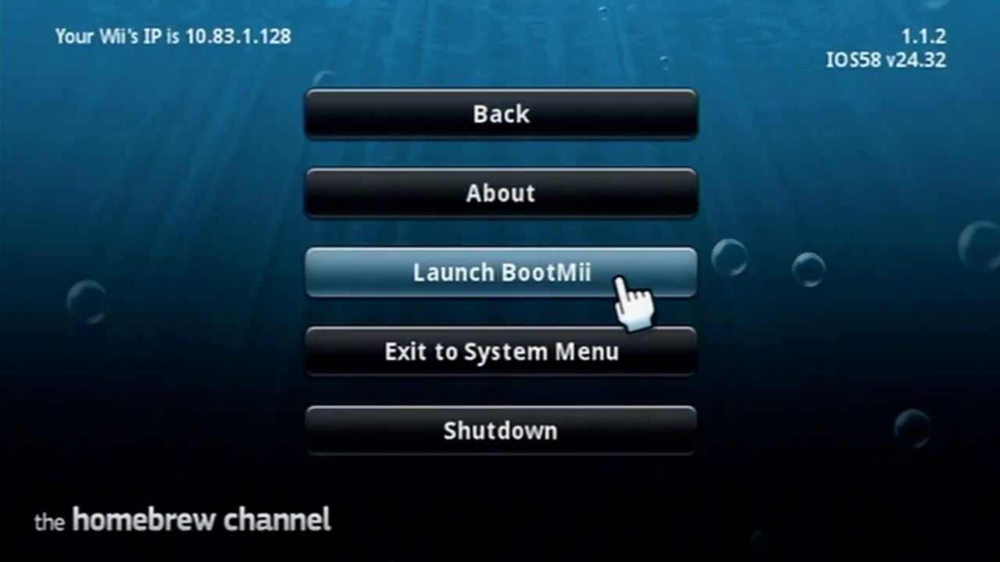
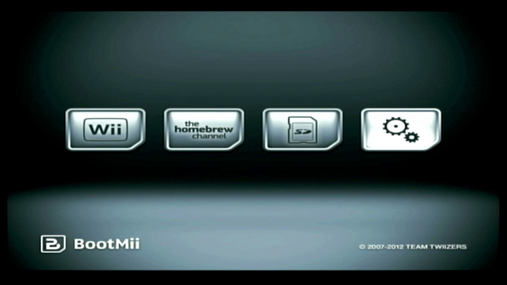
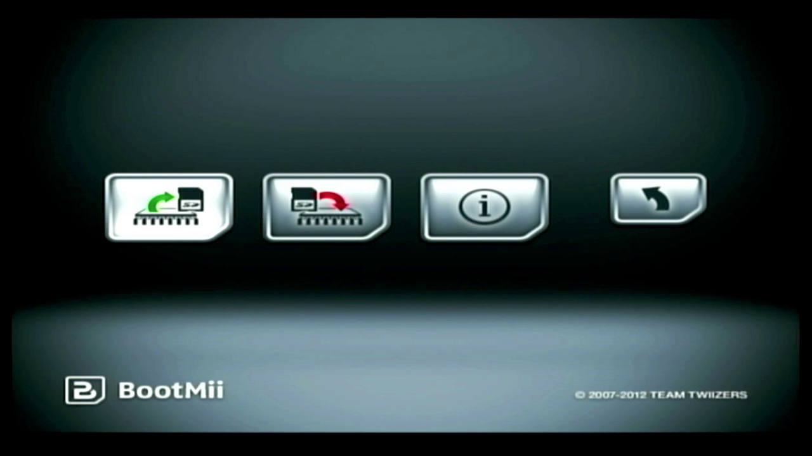
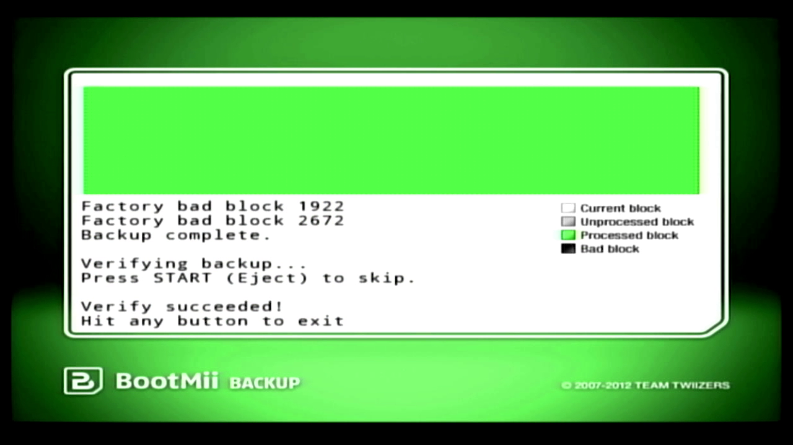
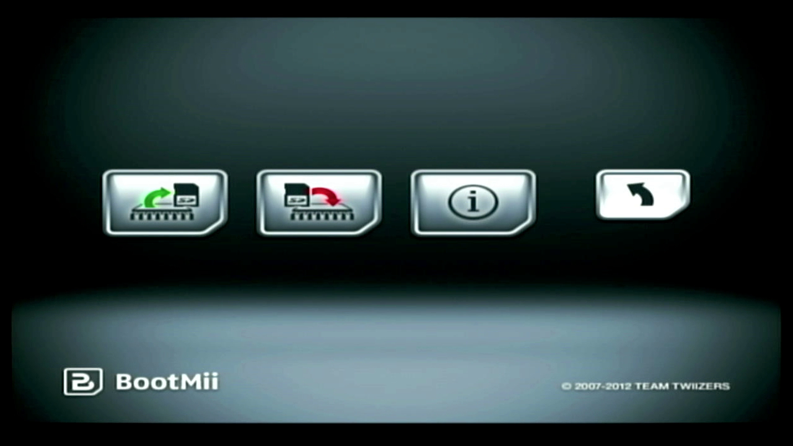
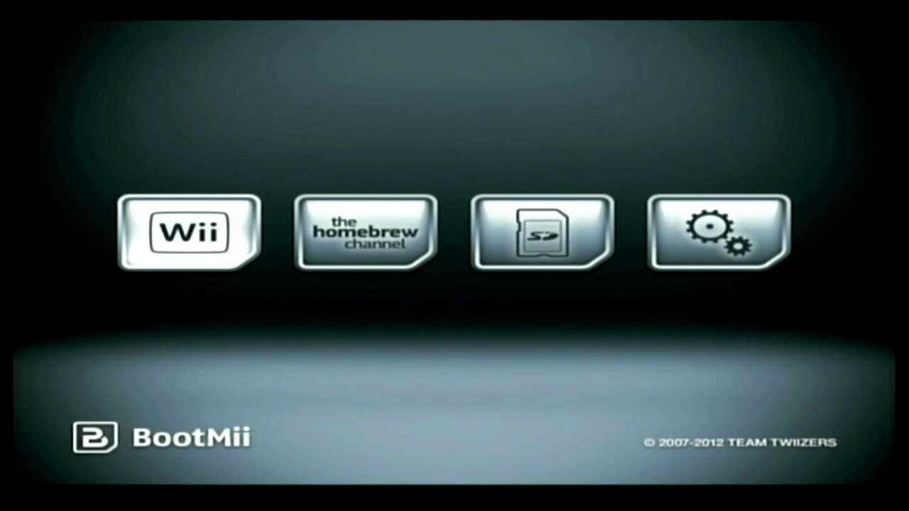

Bootmii
Bootmii is a useful tool for the Wii. It allows you to create and restore NAND backups, which makes it important brick protection. This guide will show how to create a NAND backup.
For this guide, you will need:
• A Wii with bootmii installed
• An SD card formatted to FAT32, which contains the bootmii files
1. In the homebrew channel, press the home button on your wiimote. Then select launch bootmii.
2. Using the power button to navigate and the reset button to select, go to the settings icon and select it.
3. Press reset to select NAND backup.
4. The NAND backup will now start. Don't worry about bad blocks, they are completely normal. Once it has finished, press the reset button to exit.
5. Press the power button 3 times, then the reset button to select back.
6. Press the reset button to return to the Wii Menu. You may now turn off your console.
7. You may copy your "nand.bin" and "keys.bin" files on your SD card to a safe place, as they are important in case your Wii ever bricks.